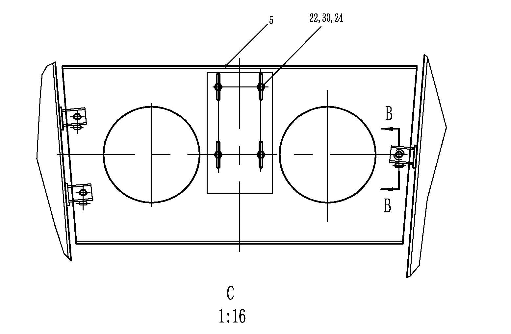

液压泵安装总成. · HYDRAULIC PUMP MOUNTING ASSY
Описание и расположение
Приводной вал гидронасоса в сборе представляет собой приводное устройство, расположенное между задней частью основного тягового генератора переменного тока и гидронасосом в сборе.
Управление
Данная сборочная единица служит для передачи крутящего момента от муфты выходного вала позади основного тягового генератора переменного тока к гидронасосу и насосу рулевого управления в сборе.
Ремонт и регулировка
Периодический ремонт включает следующие виды работ:
1. Убедиться в прочном креплении всех деталей и надежной затяжке всех установочных болтов.
2. Визуально проверить соответствие/ несоответствие смазываемости подшипника кардана требованиям к условиям устойчивой работы. Отремонтировать или заменить по мере необходимости.
3. Визуально проверить установочную раму гидравлического насоса, особое внимание уделить проверке резиновой установочной подкладки на наличие отслоения, ослабления, износа или повреждений. В случае необходимости провести ремонт или замену.
4. Проверить соответствие/несоответствие расстояния от передней поверхности кронштейна насоса (это не представляет собой монтажную поверхность насоса) до поверхности соединителя привода насоса (расположенного позади основного тягового генератора переменного тока) требуемой норме. В случае несоответствия, следует отрегулировать все кронштейны в соответствии с порядком установки данного модуля.
Демонтаж (см. рис. 1)
Снятие приводного вала (с насосом) производится в следующем порядке:
1. Ослабить болт крепления (22), плоскую шайбу (30), пружинную шайбу (24) кронштейна крепления насоса в сборе (6), сдвинуть кронштейн крепления насоса в сборе (6) назад.
2. Медленно выдвигайте гидравлический насос в заднем направлении, пока фланец ведущего вала (4) не освободится от шлицевого соединения гидравлического насоса (1).
3. Снять болт крепления (21) с пружинной шайбу (20) приводного вала к генератору.
4. Снять приводной вал и укладывать их аккуратно.
Разборка (см. рис. 1)
Разборка приводного вала производится в следующем порядке:
1. Ослабить болт (17), гайку (18), плоскую шайбу (20), снять фланец приводного вала (4) с приводного вала (3).
2. Снять внутреннее стопорное кольцо крейцкопфа каждого подшипника кардана.
3. Соблюдать правила техники безопасности в цехе и приложить умеренное усилие, снять крышку подшипника с приводного вала и соединительной вилки в сборе.
4. Снять центральный крейцкопф в сборе.
Проверка и ремонт
Осмотр и ремонт разобранного приводного вала производится в следующем порядке:
1. Очистить все металлические компоненты в растворителе и высушить сжатым воздухом.
2. Проверить наличие/отсутствие износа, повреждений или утечек. Отремонтировать или заменить по мере необходимости.
ПРИМЕЧАНИЕ: В случае обнаружения повреждения опорной оси в сборе, то следует отремонтировать, выправить или заменить, затем проводить повторную балансировку.
3. Проверить еще раз снятые подшипники в сборе, определить возможные причины ненормальной работы. Следует отремонтировать или заменить по мере необходимости, за исключением нормального замедленного износа.
Сборка
Сборка приводного вала производится в следующем порядке:
1. Осторожно снять крышку подшипника в сборе с обоих концов. Необходимо обратить особое внимание, не допускается выход игл подшипника из их рабочего диапазона или загрязнение.
2. Зафиксировать остальные крышки подшипников во избежание ненужного отсоединения их от крейцкопфа в сборе.
3. Соблюдать правила техники безопасности в цехе и приложить умеренное усилие, снаружи установить крышку подшипника в приводной вал или соединительную вилку, приложить усилие внутрь, чтобы вставить крышку подшипника должным образом и оторвать внутреннее стопорное кольцо от канавки.
4. Зафиксировать крышку подшипника стопорным кольцом.
5. Для остальных крышек подшипников в сборе следует повторять шаги от 1 до 3.
6. 6. Установите фланец ведущего вала (4) на вращающийся вал и закрепите его с помощью болтов (17), гаек (18) и плоских шайб (20). Затяните с моментом 32-37 фут-фунтов (43-50 Нм).
Окончательная сборка
Общая сборка приводного вала производится в следующем порядке:
1. Проверить следующие детали и убедиться в надлежащей гладкости и отсутствии трещин, чтобы облегчить ремонт:
a. сопрягаемая поверхность приводного вала генератора переменного тока;
b. два фланцевых конца приводного вала (3);
c. сопрягаемая поверхность фланца приводного вала (4);
d. внутренние шлицы фланца приводного вала (4);
e. шлицы привода насоса.
2. Наносить консистентную смазку с целью облегчения установки наружных шлицев приводного вала насоса и внутренних шлицев фланца приводного вала.
3. Установить фланцевый конец приводного вала (3)на выходной фланец основного генератора, затянуть винты до достижения момента 32-37 фут-фунтов (43-50 Н.м).
4. Сдвинуть насос в сборе вперед, совместить шлицы насоса с внутренними шлицами фланца приводного вала (4).
5. После совмещения деталей друг с другом слегка сдвинуть насос вперед до упора.
6. Сдвиньте гидравлический насос (1) назад, чтобы между фланцем привода (4) и передней крышкой гидравлического насоса (1) оставался зазор в 5 мм.
7. Измерить угол между приводным валом и параллельно ему расположенным днищем генератора, довести угол до ±2°.
ПРИМЕЧАНИЕ: Для получения правильных размеров рекомендуется использовать электронный или прецизионный угловой калибр или аналогичные инструменты.
8. Зафиксировать насос в сборе болтом (22), закаленной шайбой (30) и пружинной шайбой (24).
Гидравлическая система – привод гидронасоса в сборе
050-0030
Гидравлическая система – привод гидронасоса в сборе
050-0030
2
1
Спецификация1Шестеренчатый насос11Шестигранный болт21Шестигранный болт31Шайба2Поршневой насос12Шестигранная гайка22Шестигранный болт3Приводной вал13плоская шайба23Плоская шайба4Фланец приводного вала14болт24Пружинная шайба5Сборка кронштейна насоса1525Шестигранный болт6Кронштейн крепления насоса в сборе1626Шестигранный болт7Уголок17Шестигранный болт27Шестигранная гайка8Кронштейн18Шестигранная гайка289Прокладка192910Резиновая втулка20Цементированная шайба30ШайбаРис. 1. Привод гидронасоса в сборе (1-3)
опорный кронштейн рамы.
Рис. 1. Привод гидронасоса в сборе (2-3)
Рис. 1. Привод гидронасоса в сборе (3-3)
Иллюстрации
